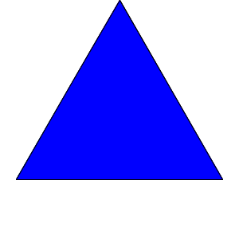
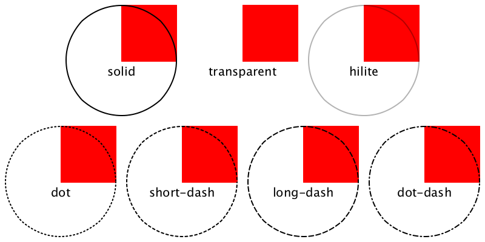
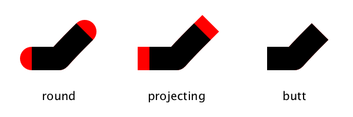
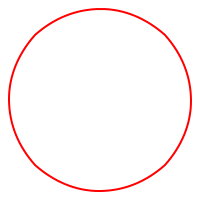

6.0.0.2
Pict
| (require metapict/pict) | package: base |
1 Pict Adjusters
All images in MetaPict are represented as picts. A pict
is a structure that holds information on how to draw a picture.
A pict can be rendered to produce an image in various
formats such as png, pdf, and, svg.
The standard library pict defines lots of functions to
construct and manipulate picts. MetaPict provides and
offer a some extra operations. Since they are not MetaPict specific,
they are also useful outside the world of MetaPict.
A few of the pict operations are provided under new names.
The basic concept in MetaPict is the curve. Therefore it makes sense
for, say, circle to return a curve. In the pict library
the name circle returns a pict, so to avoid a name conflict
it is exported as circle-pict.
An attempt have been made to make the pict the last argument
of all operations. This explains the existance of a few functions whose
functionality overlap with the pict library.
The operations in this section operate on picts, so use
draw to convert curves into picts.
1.1 Pen Adjusters
Draws the pict
p with a solid pen and brush of the color
c.
It is equivalent to
(pencolor c (brushcolor c p)).
| > (color "red" (filldraw unitcircle)) |
 |
Draws the pict
p with a solid pen color
c.
The brush is not affected by
pencolor.
Draws the pict
p with a pen of width
w, a real number between 0 and 255.
Same as
linewidth.
TODO: What unit?!?!
Adjusts the current pen width to a width s times wider than the
current, then draws the pict p.
Adjusts the current pen style, and then draws the pict
p.
The available styles are:
'transparent 'solid 'hilite 'dot 'long-dash 'short-dash 'dot-dash.
Note: The
pen% documentation mentions a few xor- styles, these
are no longer supported by Racket.
| > (define (styled-circle style) | | (draw (color "red" (filldraw unitsquare)) | | (penstyle style (draw unitcircle)) | | (label-bot (~a style) (pt 0 0)))) |
|
|
| > (def styles1 '(solid transparent hilite)) |
|
| > (def styles2 '(dot short-dash long-dash dot-dash)) |
|
| > (above (beside* (map styled-circle styles1)) | | (beside* (map styled-circle styles2))) |
|
 |
Adjusts the current pen cap, and then draws the pict p.
The available caps are: 'round, 'projecting, and, 'butt.
The cap determines how the end of curves are drawn.
The default pen is 'round.
|
|
| > (def caps '(round projecting butt)) |
|
| > (beside* (map squiggle caps)) |
 |
Adjusts the current pen join, and then draws the pict p.
The available joins are: 'round, 'bevel, and, 'miter.
The join determines how the transition from one curve section to the next is
drawn. The default join is 'round.
Note: If you want to draw a rectangle with crisp 90 degree
outer angle, then use the 'miter join.
|
|
| > (def joins '(round bevel miter)) |
|
| > (beside* (map squiggle joins)) |
|
Use the pen a-pen as the current pent, then draw the pict p.
| > (def teacher-pen | | (new pen% [color "red"] [width 1] [style 'solid] | | [cap 'round] [join 'round] [stipple #f])) |
|
|
| > (pen teacher-pen (draw unitcircle)) |
 |
Use the pen style 'long-dash to draw the pict p
Use the pen style 'dot to draw the pict p
1.2 Brush Adjusters
TODO: Fill in these.
Use the brush b to draw the pict p
Adjust the brush with to use the color b, then draw the pict p
Adjust the brush style to use the style s, then draw the pict p
Adjust the brush stipple to use the stipple s, then draw the pict p
Use a gradient as brush, then draw the pict p
Save the pict p as a png-file named filename.
Equivalent to
(inset p r).